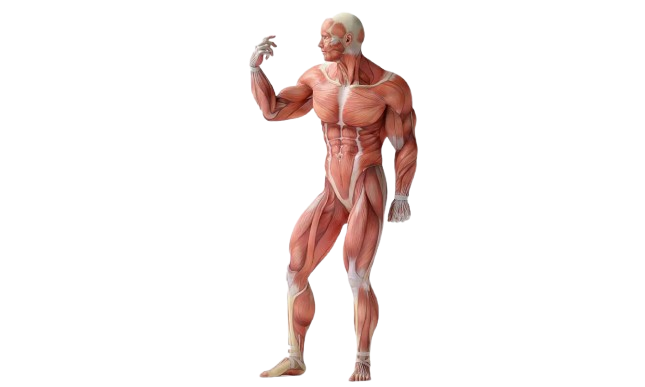

01
علاج آلام الظهر والرقبة
تقييم دقيق لأسباب الألم مع خطة علاجية تساعد على تحسين الحركة وتقليل الإجهاد اليومي.
خدمات علاج طبيعي احترافية مع الدكتور سيف الشيخ، بأسلوب عصري ومظهر طبي راقٍ وتجربة ذكية تساعد المريض يوصل حالته بسهولة.

خدماتنا
تقييم دقيق لأسباب الألم مع خطة علاجية تساعد على تحسين الحركة وتقليل الإجهاد اليومي.
برامج تأهيل احترافية للرياضيين ولمشاكل الشد العضلي والإصابات الناتجة عن التدريب.
خطة تدريجية لاستعادة القوة والمرونة والرجوع للحركة الطبيعية بأمان وثقة.
جلسات مخصصة للركبة والكتف وأسفل الظهر والمشاكل الحركية المختلفة بطريقة عملية وواضحة.
تصحيح الوضعيات الخاطئة وتقليل الضغط على العضلات والمفاصل ببرنامج علاجي مناسب.
متابعة دقيقة للحالة مع تعديل الخطة حسب الاستجابة الفعلية بدل الحلول العامة.
فيديوهات
جزء مخصص لعرض فيديوهات قصيرة ، تشرح مشاكل شائعة في العلاج الطبيعي وتقدم نصائح سريعة، وانتظرونا بمزيد من الفيديوهات في المستقبل.
فيديو توعوي يشرح التمارين المناسبة والأخطاء اللي لازم تتجنبها.
حماية العمود الفقري لتجنب الانزلاق الغضروفي .
فيديو توعوي يشرح التمارين المناسبة والأخطاء اللي لازم تتجنبها.
من نحن

دكتور سيف الدين محمد يقدم خدمات علاج طبيعي بأسلوب واضح وعصري يركز على راحة المريض， فهم سبب المشكلة، وبناء خطة علاجية مناسبة لكل حالة.
المساعد الذكي True physio